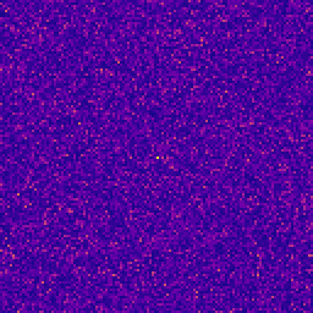
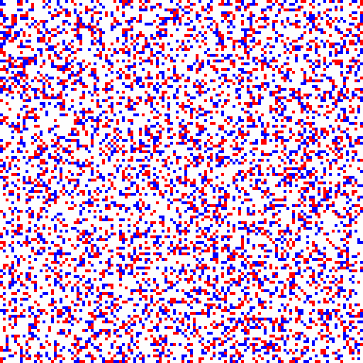
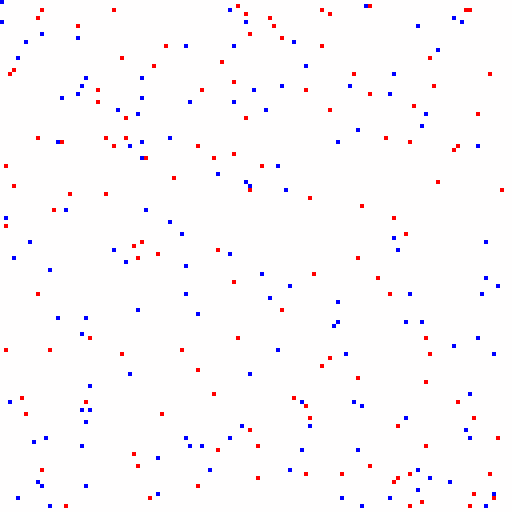
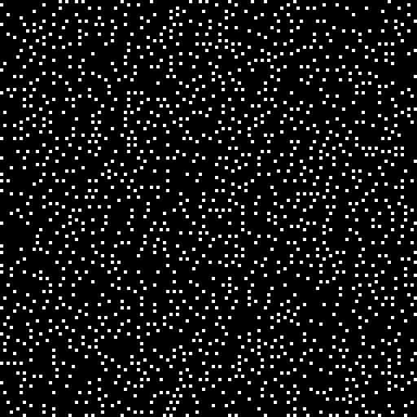
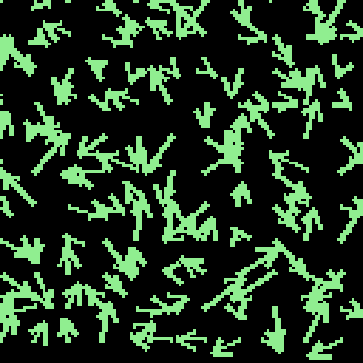
")
RUN_TAG: spec6_false_s41 · Δt: 1.00e-21 s · pixel: 1.00e-12 m · commit: aa53ee8
| Metric | Value |
|---|---|
| φ half-life (center) | 483 steps (canonical target ≈ 2000) |
| SBR (±2-bin guard) | 6.88 [6.86, 6.90] |
| Topology neutrality | 91.6% of steps with |net charge| ≤ 1 (mean vortices ≈ 86) |
| φ near vs field | 4.79e+02 ± 7.06e+02 vs 5.64e+02 ± 7.62e+02 |
Windowed estimates: W=256, hop=128, guard=±2 bins around f₀; 95% CI via bootstrap (B=1000 resamples).
See metrics_summary.csv in the downloads section for machine-readable values.
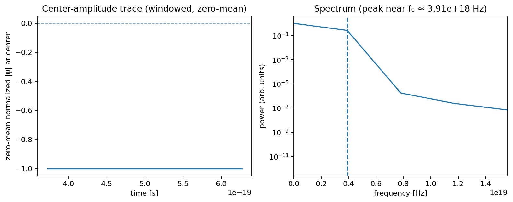
| Property | Value |
|---|---|
| Dominant frequency f₀ | 3.91e+18 Hz [3.91e+18, 3.91e+18] |
| Energy (E = h f₀) | 2.59e-15 J (~16.15 keV) |
| Wavelength (λ = c / f₀) | 7.67e-11 m |
| Effective mass | 2.88e-32 kg |
| Mass relative to electron | 0.0316 (3.16%) × electron mass |
| Max lifespan | 1000 steps |
| Median lifespan | 3 steps |
| Guided motion | Alignment with +∇|φ| (environmental guidance) |
Note. “Effective mass” is a display-only unit conversion from f₀ via m = h·f₀ / c²; it is not an intrinsic rest-mass claim. See the core paper’s “Interpretation note (v1)” for context.
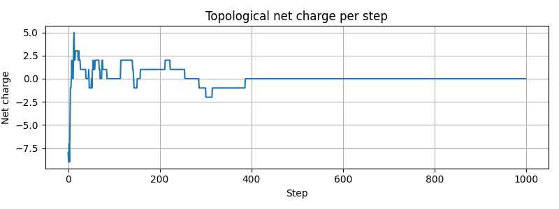
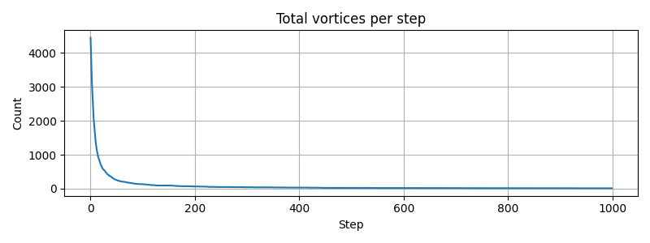
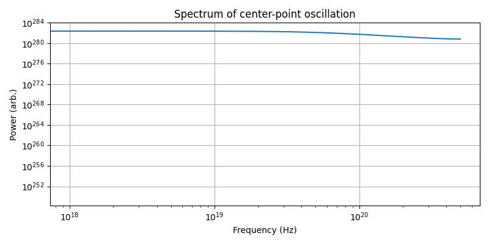
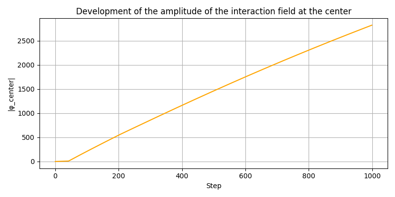





We compute an average of curl(∇arg ψ) in local windows centered on detected quasiparticles.
The resulting map shows a robust dipole-like pattern (“spin aura”). We report this as an emergent
flow pattern in the model; no claim is made about quantum spin.
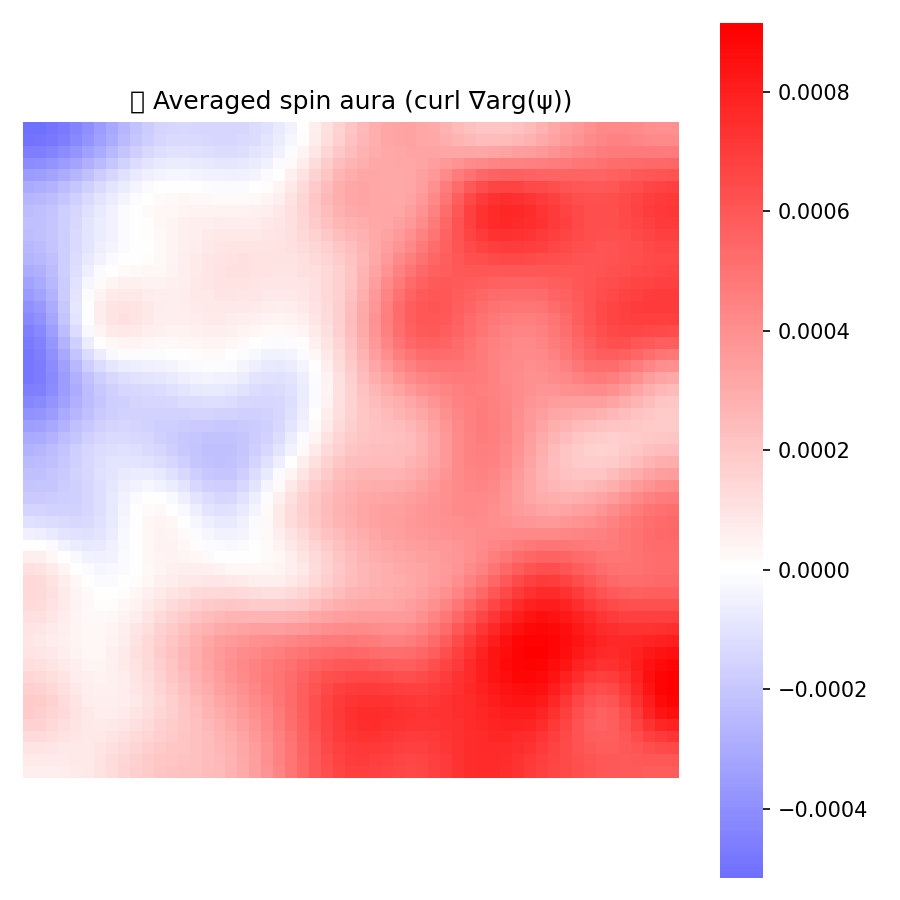
Note on φ-guided motion.
We do not claim a gravitational theory. In the canonical regime, particles tend to move along gradients of the background field φ. We refer to this as environmental guidance: a metric-like influence of φ on trajectories, without introducing a force law or any analogy to GR. This behavior is quantified via alignment metrics in the report and should be interpreted as an emergent guidance effect within the model.
The name Lineum is a coined term from the Latin linea ("line" or "thread"), symbolizing the filament-like tension structures that emerge in the field. It refers to a hypothetical quantum field defined by local, nonlinear evolution rules. This field exhibits spontaneous formation of vortices, oscillations, topological effects, and quasiparticles.
Pronunciation: line-um (Czech: lineum, as written).
The name follows a tradition of physics-inspired constructs such as graviton, inflaton, or axion—terms that suggest emergent dynamics without predefining their exact physical nature.
Note: This report summarizes operational measurements from a 2D emergent model. No cosmological, gravitational, biomedical or metaphysical claims are made.
(c) Lineum – emergent quantum field simulation